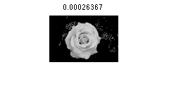
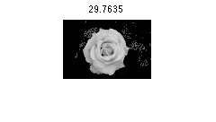

Contents
Read image and take input; initialize
clc;clear; close all; addpath('GCMex')
im = rgb2gray(imread('rose.jpg'));
rect = rectInput(im);
sz = size(im);
sz = sz(1:2);
Z = double(im(:));
N = numel(Z);
alpha = ones(size(im));
alpha(rect(1):rect(1)+rect(3),rect(2):rect(2)+rect(4)) = 2;
alpha = alpha(:);
Parameters
gamma = 50;
CLASS
class = alpha-1;
UNARY
h = [imhist(uint8(Z(alpha == 1))) imhist(uint8(Z(alpha == 2)))];
h = h./repmat(sum(h),256,1);
eps = exp(-20);
unary = -log(h(Z+1,:)+eps);
PAIRWISE
for beta = 10.^(linspace(-4,4,20))
r = zeros(N*8,1);
c = zeros(N*8,1);
s = zeros(N*8,1);
j = 1;
for i = 1:N
[x,y] = ind2sub_fast(sz,i);
m = sub2ind_fast(sz,min(x+1,size(im,1)),y);
s(j) = 1*(alpha(m) ~= alpha(i))*exp(-beta*(Z(m)-Z(i))^2);
c(j) = m; r(j) = i;j=j+1;
m = sub2ind_fast(sz,max(x-1,1),y);
s(j) = 1*(alpha(m) ~= alpha(i))*exp(-beta*(Z(m)-Z(i))^2);
c(j) = m; r(j) = i;j=j+1;
m = sub2ind_fast(sz,x,min(y+1,size(im,2)));
s(j) = 1*(alpha(m) ~= alpha(i))*exp(-beta*(Z(m)-Z(i))^2);
c(j) = m; r(j) = i;j=j+1;
m = sub2ind_fast(sz,x,min(y+1,size(im,2)));
s(j) = 1*(alpha(m) ~= alpha(i))*exp(-beta*(Z(m)-Z(i))^2);
c(j) = m; r(j) = i;j=j+1;
m = sub2ind_fast(sz,min(x+1,size(im,1)),min(y+1,size(im,2)));
s(j) = 1/sqrt(2)*(alpha(m) ~= alpha(i))*exp(-beta*(Z(m)-Z(i))^2);
c(j) = m; r(j) = i;j=j+1;
m = sub2ind_fast(sz,max(x-1,1),max(y-1,1));
s(j) = 1/sqrt(2)*(alpha(m) ~= alpha(i))*exp(-beta*(Z(m)-Z(i))^2);
c(j) = m; r(j) = i;j=j+1;
m = sub2ind_fast(sz,max(x-1,1),min(y+1,size(im,2)));
s(j) = 1/sqrt(2)*(alpha(m) ~= alpha(i))*exp(-beta*(Z(m)-Z(i))^2);
c(j) = m; r(j) = i;j=j+1;
m = sub2ind_fast(sz,min(x+1,size(im,1)),max(y-1,1));
s(j) = 1/sqrt(2)*(alpha(m) ~= alpha(i))*exp(-beta*(Z(m)-Z(i))^2);
c(j) = m; r(j) = i;j=j+1;
end
pairwise = gamma*sparse(r,c,s,N,N);
Graph cuts
[labels, energy, energyAfter] = ...
GCMex(class', single(unary'), pairwise, single(zeros(2)));
Results
figure
imshow(cutImage(im,labels,1))
title(num2str(beta))
 
end
figure
subplot(1,2,1)
imshow(cutImage(im,labels,1))
subplot(1,2,2)
imshow(reshape(labels,sz))